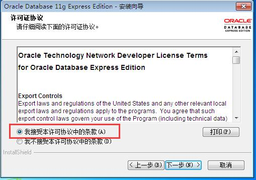
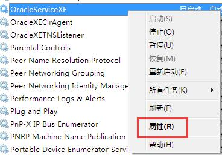
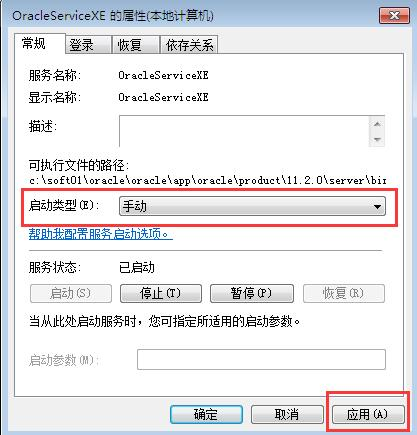

第一节 Oracle数据库安装
一、下载OracleEX11g
到 Oracle 官网下载： http://www.oracle.com/
在首页菜单找到 “Oracle Database”
找到 “Oracle Database 11g Express Edition”
找到合适的版本下载即可
下载时会弹出登录页面，如果没有Oracle帐号，可以注册一个
二、环境准备
1、 数据库版本
OracleXE112_Win64

2、 操作系统版本
Windows_7_home_basic_x86
三、Oracle安装
1、 创建安装目录
在C盘下创建soft01\oracle目录
2、 启动安装程序

3、 选择安装目录
目标文件夹：C:\soft01\oracle\
4、 设置管理员用户密码
为管理员用户sys和system创建密码：Sysmanager1

5、 安装完成
四、数据库服务
打开“任务管理器”，打开“服务”选项卡，打开服务管理
找到OracleServiceXE服务
设置属性，将启动类型由“自动”改为“手动”


加入 QQ 群：5ijy网站开发交流  ，获取更多源代码和开发环境配置信息。
，获取更多源代码和开发环境配置信息。